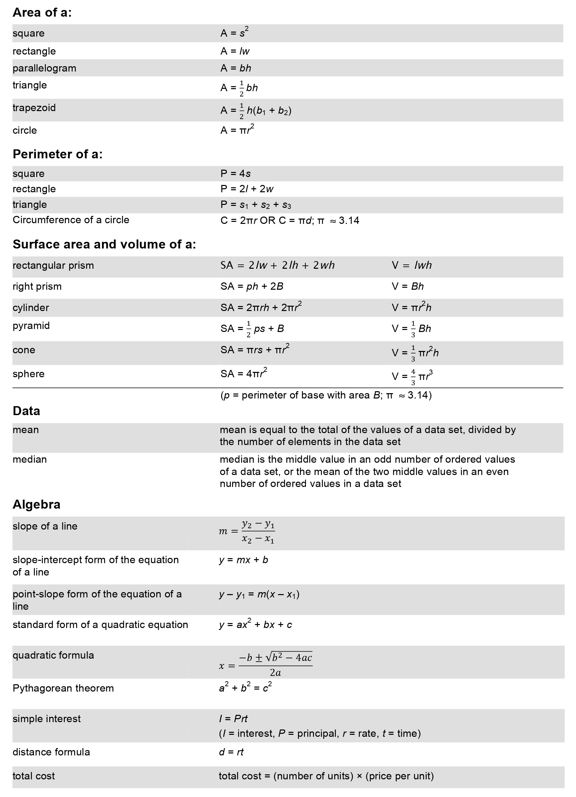

This question tests your ability to solve a basic two-step linear equation by isolating the variable on one side of the equation.
To isolate $x$, we must perform inverse operations to move the constants to the right side of the equation.
Step 1: Add $5$ to both sides of the equation to cancel out the $- 5$.
$$3x - 5 + 5 = 16 + 5$$
$$3x = 21$$
Step 2: Divide both sides by $3$ to isolate $x$.
$$\frac{3x}{3} = \frac{21}{3}$$
$$x = 7$$
Final Answer: The solution is $x = 7$.
Solve for $y$: $4y - 7 = 17$
Answer: B (Adding $7$ gives $4y = 24$, and dividing by $4$ gives $y = 6$.)
Solve for $m$: $2m + 9 = 25$
Answer: C (Subtracting $9$ gives $2m = 16$, and dividing by $2$ gives $m = 8$.)
This question requires you to solve an equation with variables on both sides by grouping the variable terms together and the constant terms together.
We need to get all the $x$ terms on one side and all the numbers on the other side.
Step 1: Subtract $3x$ from both sides to group the variables on the left.
$$5x - 3x + 12 = 40$$
$$2x + 12 = 40$$
Step 2: Subtract $12$ from both sides to isolate the variable term.
$$2x = 40 - 12$$
$$2x = 28$$
Step 3: Divide both sides by $2$.
$$\frac{2x}{2} = \frac{28}{2}$$
$$x = 14$$
Final Answer: The solution is $x = 14$.
Solve for $p$: $7p - 4 = 4p + 11$
Answer: C (Subtracting $4p$ gives $3p - 4 = 11$, then adding $4$ gives $3p = 15$, so $p = 5$.)
Solve for $k$: $6k + 8 = 2k + 32$
Answer: B (Subtracting $2k$ gives $4k + 8 = 32$, then subtracting $8$ gives $4k = 24$, so $k = 6$.)
This equation involves a negative coefficient for the variable, requiring careful attention to negative signs during division.
First, we will move the constant to the other side, taking care not to drop the negative sign attached to the $2x$.
Step 1: Subtract $7$ from both sides.
$$-2x = 19 - 7$$
$$-2x = 12$$
Step 2: Divide both sides by $-2$ to isolate $x$.
$$\frac{-2x}{-2} = \frac{12}{-2}$$
$$x = -6$$
Final Answer: The solution is $x = -6$.
Solve for $w$: $10 - 3w = 22$
Answer: A (Subtracting $10$ yields $-3w = 12$, and dividing by $-3$ gives $w = -4$.)
Solve for $z$: $5 - 4z = -15$
Answer: C (Subtracting $5$ gives $-4z = -20$, and dividing by $-4$ gives $z = 5$.)
Solving inequalities is almost identical to solving equations, with the goal of isolating the variable while preserving the inequality symbol.
We apply the same inverse operations used for linear equations.
Step 1: Add $3$ to both sides.
$$4x - 3 + 3 > 13 + 3$$
$$4x > 16$$
Step 2: Divide both sides by $4$.
$$\frac{4x}{4} > \frac{16}{4}$$
$$x > 4$$
Final Answer: The solution is $x > 4$.
Solve the inequality: $5y + 2 < 27$
Answer: B (Subtracting $2$ yields $5y < 25$, and dividing by $5$ gives $y < 5$.)
Solve the inequality: $2m - 8 \geq 10$
Answer: A (Adding $8$ yields $2m \geq 18$, and dividing by $2$ gives $m \geq 9$.)
Evaluating an expression involves substituting a specific numerical value in place of a variable and applying the correct order of operations (PEMDAS).
We will replace every instance of $a$ with $(-2)$ and calculate the result.
Step 1: Substitute $-2$ into the expression using parentheses to maintain correct signs.
$$3(-2)^2 - 4(-2)$$
Step 2: Evaluate the exponent first. Remember that a negative number squared becomes positive.
$$3(4) - 4(-2)$$
Step 3: Perform the multiplication from left to right.
$$12 - (-8)$$
Step 4: Simplify the subtraction of a negative number.
$$12 + 8$$
$$20$$
Final Answer: The solution is $20$.
Evaluate $5x^2 - 2x$ when $x = -3$.
Answer: C (Substituting $-3$ gives $5(9) - 2(-3)$, which becomes $45 + 6 = 51$.)
Evaluate $2y^2 + 3y$ when $y = -4$.
Answer: A (Substituting $-4$ gives $2(16) + 3(-4)$, which becomes $32 - 12 = 20$.)
Substitution requires plugging a given number into an algebraic expression and resolving the arithmetic following the standard order of operations.
We will insert $3$ wherever there is an $x$ in the polynomial.
Step 1: Substitute $3$ for $x$.
$$2(3)^2 + 5(3) - 4$$
Step 2: Calculate the exponent term.
$$2(9) + 5(3) - 4$$
Step 3: Multiply the terms.
$$18 + 15 - 4$$
Step 4: Add and subtract from left to right.
$$33 - 4$$
$$29$$
Final Answer: The solution is $29$.
If $x = 4$, find $3x^2 - 2x + 1$.
Answer: B (Substituting $4$ gives $3(16) - 2(4) + 1$, which is $48 - 8 + 1 = 41$.)
If $x = 2$, find $4x^2 + 6x - 5$.
Answer: A (Writing $0.8$ as $\frac{8}{10}$ and dividing both by $2$ gives $\frac{4}{5}$.)
This equation requires using the distributive property first to remove the parentheses before collecting like terms and isolating the variable.
We will multiply the terms outside the parentheses by each term inside, then solve.
Step 1: Distribute the $2$ on the left and the $3$ on the right.
$$2x - 8 = 3x + 6$$
Step 2: Subtract $2x$ from both sides to group variables on the right.
$$-8 = x + 6$$
Step 3: Subtract $6$ from both sides to isolate $x$.
$$-14 = x$$
Final Answer: The solution is $x = -14$.
Solve for $y$: $4(y - 2) = 2(y + 8)$
Answer: C (Distributing gives $4y - 8 = 2y + 16$. Subtracting $2y$ gives $2y - 8 = 16$. Adding $8$ gives $2y = 24$, so $y = 12$.)
Solve for $m$: $3(m + 5) = 5(m - 1)$
Answer: D (Distributing gives $3m + 15 = 5m - 5$. Subtracting $3m$ gives $15 = 2m - 5$. Adding $5$ gives $20 = 2m$, so $m = 10$.)
When multiplying algebraic terms, you multiply the coefficients (numbers) together and use exponent rules to multiply the variables (add the exponents).
We will handle the numbers and the variables separately.
Step 1: Multiply the coefficients.
$$3 \times 4 = 12$$
Step 2: Multiply the variables by adding their exponents. Remember that $x$ is equivalent to $x^1$.
$$x^1 \times x^2 = x^{1+2} = x^3$$
Step 3: Combine the coefficient and the variable.
$$12x^3$$
Final Answer: The solution is $12x^3$.
Simplify: $(5y^2)(2y^3)$.
Answer: B (Multiply $5 \times 2 = 10$, and add exponents $2 + 3 = 5$.)
Simplify: $(-2m)(6m^4)$.
Answer: C (Multiply $-2 \times 6 = -12$, and add exponents $1 + 4 = 5$.)
Simplifying algebraic expressions involves using the distributive property to remove parentheses, and then combining any like terms.
We will multiply the $5$ through the parentheses first.
Step 1: Distribute the $5$ to both terms inside the parentheses.
$$5(x) - 5(3) + 2x$$
$$5x - 15 + 2x$$
Step 2: Identify the like terms, which are the terms containing $x$.
$$5x \text{ and } 2x$$
Step 3: Combine the like terms by adding their coefficients.
$$(5x + 2x) - 15$$
$$7x - 15$$
Final Answer: The solution is $7x - 15$.
Simplify: $4(2y + 1) - 3y$.
Answer: B (Distributing gives $8y + 4 - 3y$. Combining $8y$ and $-3y$ yields $5y + 4$.)
Simplify: $-2(m - 4) + 5m$.
Answer: B (Distributing gives $-2m + 8 + 5m$. Combining $-2m$ and $5m$ yields $3m + 8$.)
This is a "Difference of Squares" pattern. It takes the form $a^2 - b^2$, which always factors into the two binomials $(a + b)(a - b)$.
We identify the square roots of the two terms and plug them into the pattern.
Step 1: Find the square root of the first term.
$$\sqrt{x^2} = x$$
Step 2: Find the square root of the second term.
$$\sqrt{9} = 3$$
Step 3: Write the two binomial factors, one with a plus and one with a minus.
$$(x + 3)(x - 3)$$
Final Answer: The solution is $(x + 3)(x - 3)$.
Factor completely: $y^2 - 25$.
Answer: C (The square root of $25$ is $5$, making the factors $(y + 5)(y - 5)$.)
Factor completely: $m^2 - 64$.
Answer: A (The square root of $64$ is $8$, making the factors $(m + 8)(m - 8)$.)
Factoring by finding the Greatest Common Factor (GCF) involves identifying the largest variable or number that evenly divides into all terms of an expression.
We will look for the common element shared by both $x^2$ and $5x$.
Step 1: Identify the GCF. Both terms share an $x$.
Step 2: Divide both terms by $x$ to see what remains inside the parentheses.
$$\frac{x^2}{x} = x$$
$$\frac{5x}{x} = 5$$
Step 3: Write the GCF outside the parentheses and the remaining parts inside.
$$x(x + 5)$$
Final Answer: The solution is $x(x + 5)$.
Factor completely: $y^2 - 7y$.
Answer: A (Both terms share a $y$, leaving $y - 7$ inside the parentheses.)
Factor completely: $3m^2 + 12m$.
Answer: C (The GCF is $3m$, leaving $m + 4$ inside the parentheses.)
The solution to a system of equations is the coordinate point $(x, y)$ where the two lines intersect. This point must make both equations mathematically true when substituted.
If given a multiple-choice list of points, the most reliable method is to plug the $x$ and $y$ values into both equations to check for equality.
Step 1: Take the $(x, y)$ coordinate from the first option.
Step 2: Substitute $x$ and $y$ into the first equation. If the left side equals the right side, proceed. If not, eliminate the option.
Step 3: Substitute the same $x$ and $y$ into the second equation. If it is also true, you have found the solution.
Final Answer: The solution is the specific point that satisfies both equations simultaneously.
Which point is the solution to the system: $y = 2x + 1$ and $y = -x + 4$?
Answer: B (Plugging in $x=1$ and $y=3$ makes both $3 = 2(1)+1$ and $3 = -1+4$ true.)
Which point is the solution to the system: $x + y = 10$ and $x - y = 2$?
Answer: C (Plugging in $x=6$ and $y=4$ makes both $6+4=10$ and $6-4=2$ true.)
Translating English phrases into algebraic expressions requires knowing keywords. "Twice" means multiply by $2$, and "more than" means addition (and reverses the order of the terms).
We will build the expression piece by piece, letting $x$ represent "a number."
Step 1: Translate "twice a number."
$$2x$$
Step 2: Translate "5 more than." This means we are adding $5$ to the previous part.
$$+ 5$$
Step 3: Combine the elements. Because addition is commutative, the order can vary, but standard form places the variable first.
$$2x + 5$$
Final Answer: The solution is $2x + 5$.
Translate: "7 less than three times a number."
Answer: B ("Three times a number" is $3x$. "7 less than" means you subtract $7$ from it, resulting in $3x - 7$.)
Translate: "The sum of a number and 4, divided by 2."
Answer: B ("The sum" groups $x$ and $4$ together as $x + 4$, and the entire quantity is divided by $2$.)
Absolute value measures distance from zero, which means the expression inside the bars could be either positive or negative. Therefore, an absolute value equation usually has two separate solutions.
We must split the equation into two different cases: one positive and one negative.
Step 1: Write the positive case.
$$x - 7 = 3$$
Step 2: Solve the positive case by adding $7$.
$$x = 10$$
Step 3: Write the negative case.
$$x - 7 = -3$$
Step 4: Solve the negative case by adding $7$.
$$x = 4$$
Final Answer: The solutions are $x = 10$ and $x = 4$.
Solve: $|y + 2| = 8$.
Answer: C (The positive case gives $y + 2 = 8 \rightarrow y = 6$. The negative case gives $y + 2 = -8 \rightarrow y = -10$.)
Solve: $|m - 5| = 12$.
Answer: A (The positive case gives $m - 5 = 12 \rightarrow m = 17$. The negative case gives $m - 5 = -12 \rightarrow m = -7$.)
The area of a rectangle measures the space inside the shape. It is found by multiplying the length by the width.
We will use the area formula for a rectangle: $A = l \times w$. Let $l = 8$ and $w = 3$.
Step 1: Substitute the values into the formula.
$$A = 8 \times 3$$
Step 2: Perform the multiplication.
$$A = 24$$
Final Answer: The solution is $24\text{ cm}^2$.
Find the area of a rectangle that is $12\text{ cm}$ long and $5\text{ cm}$ wide.
Answer: C (Multiplying $12 \times 5$ yields $60$.)
A rectangular rug is $9\text{ m}$ by $4\text{ m}$. What is its area?
Answer: C (Multiplying $9 \times 4$ yields $36$.)
The perimeter of a rectangle is the total distance around the outside edge. It is calculated by adding all four sides together or using the formula $P = 2l + 2w$.
We will use the formula $P = 2l + 2w$ with $l = 8$ and $w = 3$.
Step 1: Substitute the values into the formula.
$$P = 2(8) + 2(3)$$
Step 2: Multiply the terms.
$$P = 16 + 6$$
Step 3: Add the results.
$$P = 22$$
Final Answer: The solution is $22\text{ cm}$.
Find the perimeter of a rectangular garden that is $15\text{ ft}$ long and $10\text{ ft}$ wide.
Answer: B (Calculating $2(15) + 2(10)$ gives $30 + 20 = 50$.)
What is the perimeter of a rectangle measuring $7\text{ m}$ by $12\text{ m}$?
Answer: B (Calculating $2(7) + 2(12)$ gives $14 + 24 = 38$.)
The area of a circle is calculated using the formula $A = \pi r^2$, where $r$ is the radius and $\pi$ is approximately $3.14$.
We will substitute the radius into the formula and solve.
Step 1: Write the formula and substitute $r = 7$.
$$A = \pi(7)^2$$
Step 2: Square the radius.
$$A = 49\pi$$
Step 3: Multiply by the approximate value of $\pi$ ($3.14$).
$$A \approx 49 \times 3.14$$
$$A \approx 153.86$$
Final Answer: The solution is approximately $153.86\text{ cm}^2$ (or exactly $49\pi$).
Find the exact area of a circle with a radius of $5\text{ m}$.
Answer: C (Squaring the radius $5$ gives $25$, making the exact area $25\pi$.)
What is the approximate area of a circle with a radius of $3\text{ inches}$? (Use $\pi \approx 3.14$)
Answer: C (Squaring $3$ gives $9$, and $9 \times 3.14 = 28.26$.)
The area of a triangle is exactly half the area of a rectangle with the same base and height. The formula is $A = \frac{1}{2}bh$.
We will use the area formula with $b = 10$ and $h = 6$.
Step 1: Substitute the values into the formula.
$$A = \frac{1}{2}(10)(6)$$
Step 2: Multiply the base and height.
$$A = \frac{1}{2}(60)$$
Step 3: Take half of the product.
$$A = 30$$
Final Answer: The solution is $30\text{ cm}^2$.
Find the area of a triangle with a base of $14\text{ in}$ and a height of $5\text{ in}$.
Answer: A (Multiplying $14 \times 5$ gives $70$, and taking half yields $35$.)
A triangular sign has a base of $8\text{ ft}$ and a height of $12\text{ ft}$. What is its area?
Answer: B (Multiplying $8 \times 12$ gives $96$, and taking half yields $48$.)
The volume of a cylinder is found by calculating the area of its circular base and multiplying it by its height. The formula is $V = \pi r^2 h$.
We will substitute $r = 4$ and $h = 10$ into the volume formula.
Step 1: Substitute the values into the formula.
$$V = \pi(4)^2(10)$$
Step 2: Square the radius.
$$V = \pi(16)(10)$$
Step 3: Multiply the numbers to find the exact volume in terms of $\pi$.
$$V = 160\pi$$
Step 4: For an approximate decimal value, multiply by $3.14$.
$$V \approx 160 \times 3.14 = 502.4$$
Final Answer: The solution is $160\pi\text{ cm}^3$ (or approximately $502.4\text{ cm}^3$).
Find the exact volume of a cylinder with a radius of $3\text{ in}$ and a height of $8\text{ in}$.
Answer: C (Squaring $3$ gives $9$, and multiplying by $8$ gives $72\pi$.)
A cylindrical tank has a radius of $5\text{ ft}$ and a height of $4\text{ ft}$. What is its exact volume?
Answer: D (Squaring $5$ gives $25$, and multiplying by $4$ gives $100\pi$.)
A square has four sides of equal length. The perimeter is simply the total distance around it, calculated by multiplying the side length by $4$.
We will use the perimeter formula for a square: $P = 4s$, where $s = 9$.
Step 1: Substitute the side length into the formula.
$$P = 4(9)$$
Step 2: Multiply.
$$P = 36$$
Final Answer: The solution is $36\text{ cm}$.
Find the perimeter of a square room with a side length of $15\text{ ft}$.
Answer: C (Multiplying $15 \times 4$ yields $60$.)
What is the perimeter of a square tile with a side of $6\text{ inches}$?
Answer: B (Multiplying $6 \times 4$ yields $24$.)
The slope of a line represents its steepness and is calculated as the ratio of the change in the y-values (rise) to the change in the x-values (run) between two points.
We will use the standard slope formula: $m = \frac{y_2 - y_1}{x_2 - x_1}$. Let $(x_1, y_1) = (2, 4)$ and $(x_2, y_2) = (6, 12)$.
Step 1: Substitute the coordinates into the formula.
$$m = \frac{12 - 4}{6 - 2}$$
Step 2: Simplify the numerator and the denominator.
$$m = \frac{8}{4}$$
Step 3: Divide to find the final value.
$$m = 2$$
Final Answer: The solution is $m = 2$.
Find the slope between the points $(1, 3)$ and $(4, 15)$.
Answer: B (The calculation $\frac{15 - 3}{4 - 1}$ simplifies to $\frac{12}{3}$, which equals $4$.)
Find the slope between the points $(0, 5)$ and $(5, 25)$.
Answer: B (The calculation $\frac{25 - 5}{5 - 0}$ simplifies to $\frac{20}{5}$, which equals $5$.)
This applies the slope formula while requiring careful handling of negative numbers to ensure subtraction operations are performed correctly.
Using the formula $m = \frac{y_2 - y_1}{x_2 - x_1}$, we assign $(x_1, y_1) = (-3, 5)$ and $(x_2, y_2) = (1, -7)$.
Step 1: Substitute the values, being mindful of the negative signs.
$$m = \frac{-7 - 5}{1 - (-3)}$$
Step 2: Simplify the expression. Remember that subtracting a negative number is the same as adding a positive number.
$$m = \frac{-12}{1 + 3}$$
$$m = \frac{-12}{4}$$
Step 3: Perform the division.
$$m = -3$$
Final Answer: The solution is $m = -3$.
Find the slope of the line passing through $(-2, 8)$ and $(2, -4)$.
Answer: A (The calculation $\frac{-4 - 8}{2 - (-2)}$ simplifies to $\frac{-12}{4}$, which equals $-3$.)
Find the slope of the line passing through $(4, -1)$ and $(-1, 9)$.
Answer: A (The calculation $\frac{9 - (-1)}{-1 - 4}$ simplifies to $\frac{10}{-5}$, which equals $-2$.)
This question translates a real-world scenario into a linear equation using the slope-intercept form $y = mx + b$, where $m$ is the rate of change and $b$ is the initial starting value.
We need to identify the variable rate (the slope) and the fixed fee (the y-intercept).
Step 1: Identify the fixed starting cost. The base charge is $\$5$, so $b = 5$.
$$b = 5$$
Step 2: Identify the rate of change. The cost increases by $\$0.50$ per kilometer, so $m = 0.50$.
$$m = 0.50$$
Step 3: Combine these into the slope-intercept equation $y = mx + b$, letting $x$ represent the kilometers.
$$y = 0.50x + 5$$
Final Answer: The solution is $y = 0.50x + 5$.
A gym membership costs a flat fee of $\$20$ to join and $\$15$ per month. Write an equation for the total cost $y$ after $x$ months.
Answer: B (The monthly rate is the slope $m = 15$, and the flat joining fee is the y-intercept $b = 20$.)
A plumber charges a $\$50$ service call fee plus $\$40$ for every hour of work. Write an equation for the total bill $y$ based on $x$ hours of work.
Answer: C (The hourly rate is $m = 40$, and the fixed service fee is $b = 50$.)
The slope of a line on a graph represents its steepness. A line that rises more sharply from left to right has a greater positive slope than a flatter line.
While we cannot see the physical graph, the mathematical principle for analyzing steepness remains the same.
Step 1: Look at how fast each line rises vertically (the rise) for every unit it moves horizontally (the run).
Step 2: Compare the steepness. The line that appears steeper or more vertical has the higher rate of change.
Final Answer: The solution is the line that is visually steeper because it has a larger vertical change for the same horizontal distance.
If Line A rises $4$ units for every $1$ unit it moves right, and Line B rises $2$ units for every $1$ unit it moves right, which line has the greater slope?
Answer: A (Line A has a slope of $4$, which is greater than Line B's slope of $2$.)
Line C has the equation $y = 5x + 2$. Line D has the equation $y = 3x - 4$. Which line is steeper when graphed?
Answer: A (Line C has a slope of $5$, which is a steeper rate of change than Line D's slope of $3$.)
A linear relationship has a constant rate of change. This means that as the x-values increase by a steady amount, the y-values must also increase or decrease by a steady, consistent amount.
To check if a table is linear, calculate the change in $y$ divided by the change in $x$ for every set of points.
Step 1: Look at the changes in the x-values. Do they increase by the same amount?
Step 2: Look at the changes in the y-values. Do they increase or decrease by the same amount?
Step 3: If the ratio of the change in $y$ to the change in $x$ ($\frac{\Delta y}{\Delta x}$) is exactly the same for every pair, it is linear. If the rate changes, it is non-linear.
Final Answer: The solution is verified by checking if the rate of change (slope) remains constant.
Given the points $(1, 3)$, $(2, 5)$, $(3, 7)$, $(4, 9)$, is the relationship linear?
Answer: A (The x-values increase by $1$ and the y-values consistently increase by $2$, so the rate of change is constant.)
Given the points $(0, 0)$, $(1, 1)$, $(2, 4)$, $(3, 9)$, is the relationship linear?
Answer: B (The x-values increase by $1$, but the y-values increase by $1$, then $3$, then $5$. The rate is not constant.)
Coordinates are written as $(x, y)$. The first number tells you how far to move left or right on the x-axis, and the second number tells you how far to move up or down on the y-axis.
We will start from the origin $(0,0)$ and move according to the coordinate values.
Step 1: The x-value is $3$. Since it is positive, move $3$ units to the right along the horizontal x-axis.
Step 2: The y-value is $-2$. Since it is negative, move $2$ units down along the vertical y-axis.
Final Answer: The point $(3, -2)$ is located in the bottom-right quadrant (Quadrant IV).
In which direction do you move to plot the point $(-4, 5)$ starting from the origin?
Answer: B (The negative x means move left, and the positive y means move up.)
In which quadrant is the point $(-6, -1)$ located?
Answer: C (Both x and y are negative, which places the point in the bottom-left quadrant.)
When a linear equation is written in slope-intercept form ($y = mx + b$), the slope is the value $m$, which is the coefficient (number) directly in front of the $x$.
We simply need to identify the components of the slope-intercept form.
Step 1: Compare the given equation to the standard form $y = mx + b$.
$$y = 2x - 7$$
Step 2: Identify the number multiplying the variable $x$.
$$m = 2$$
Final Answer: The solution is $2$.
What is the slope of the line $y = -5x + 12$?
Answer: A (The coefficient of $x$ is $-5$, which represents the slope.)
What is the slope of the line $y = \frac{1}{3}x - 4$?
Answer: B (The coefficient of $x$ is $\frac{1}{3}$, which represents the slope.)
When a linear equation is written in slope-intercept form ($y = mx + b$), the y-intercept is the value $b$. This is the constant term without a variable, representing where the line crosses the y-axis.
We simply need to identify the constant term in the slope-intercept form.
Step 1: Compare the given equation to the standard form $y = mx + b$.
$$y = -3x + 9$$
Step 2: Identify the constant term hanging at the end.
$$b = 9$$
Final Answer: The solution is $9$ (or the coordinate point $(0, 9)$).
What is the y-intercept of the line $y = 4x - 15$?
Answer: D (The constant term is $-15$, which represents the y-intercept.)
What is the y-intercept of the line $y = -x + 6$?
Answer: C (The constant term is $6$, which represents the y-intercept.)
For a relationship to be a true mathematical function, every single input (x-value) must point to exactly one unique output (y-value). If an input points to two different outputs, it is not a function.
When looking at a mapping diagram, you analyze the arrows leaving the input domain.
Step 1: Look at each number in the "Input" or "x" circle.
Step 2: Count how many arrows leave each input number.
Step 3: If any input number has two or more arrows leaving it, the relationship is NOT a function. If every input has only one arrow leaving it, it IS a function.
Final Answer: The solution depends on ensuring no x-value repeats with a different y-value.
In a set of coordinate pairs: $(1, 4)$, $(2, 5)$, $(3, 6)$, $(1, 7)$, is this a function?
Answer: B (The x-value $1$ repeats with different y-values, violating the rule of a function.)
In a set of coordinate pairs: $(4, 9)$, $(5, 9)$, $(6, 9)$, is this a function?
Answer: A (It is perfectly acceptable for different inputs to share the same output. As long as no single x-value splits into multiple y-values, it is a function.)
Probability is the ratio of the number of favorable outcomes to the total number of possible outcomes. It is written as a fraction, decimal, or percentage.
We will find the total number of marbles, then place the number of red marbles over that total, and simplify the fraction.
Step 1: Calculate the total number of outcomes (marbles).
$$4 + 6 = 10$$
Step 2: Set up the probability fraction (favorable outcomes / total outcomes).
$$\frac{4}{10}$$
Step 3: Simplify the fraction by dividing the numerator and denominator by $2$.
$$\frac{4 \div 2}{10 \div 2}$$
$$\frac{2}{5}$$
Final Answer: The solution is $\frac{2}{5}$.
A spinner has $3$ green sections and $5$ yellow sections. What is the probability of spinning green?
Answer: B (The total sections are $8$, and $3$ are green, making the probability $\frac{3}{8}$.)
A box contains $5$ chocolate donuts and $15$ glazed donuts. What is the probability of selecting a chocolate donut?
Answer: B (The total donuts are $20$, and $5$ are chocolate. The fraction $\frac{5}{20}$ simplifies to $\frac{1}{4}$.)
The median is the literal middle value of a data set when the numbers are arranged in numerical order from least to greatest.
Since the numbers are already in order, we simply locate the exact middle number.
Step 1: Verify the numbers are in ascending order.
$$3, 7, 9, 15, 19$$
Step 2: Count the total number of data points. There are $5$ numbers (an odd amount), so there is one exact middle number.
Step 3: Identify the middle number.
$$9$$
Final Answer: The solution is $9$.
Find the median of the data set: $4, 11, 14, 20, 25$.
Answer: B (The numbers are ordered, and $14$ is the exact middle value.)
Find the median of the data set: $10, 5, 2, 8, 12$.
Answer: C (First, order the numbers: $2, 5, 8, 10, 12$. The middle value is $8$.)
The mean is the average of a data set. It is calculated by adding all the values together and dividing the sum by the total number of values.
We will calculate the total sum and divide by the count of the numbers.
Step 1: Add the four numbers together.
$$2 + 5 + 8 + 10 = 25$$
Step 2: Divide the sum by $4$, since there are $4$ numbers.
$$\frac{25}{4}$$
Step 3: Calculate the final decimal.
$$6.25$$
Final Answer: The solution is $6.25$.
Find the mean of the data set: $4, 8, 12, 16$.
Answer: B (The sum is $40$. Dividing by $4$ gives $10$.)
Find the mean of the test scores: $80, 90, 85, 95, 100$.
Answer: C (The sum is $450$. Dividing by $5$ gives $90$.)
The mode is the number that appears most frequently in a data set. A set can have one mode, multiple modes, or no mode at all.
We will count the frequency of each number in the set.
Step 1: List the numbers and tally their appearances.
$2$ appears once.
$4$ appears three times.
$6$ appears once.
$8$ appears once.
Step 2: Identify the highest tally.
The number $4$ appears more than any other number.
Final Answer: The solution is $4$.
Find the mode of the data set: $7, 9, 7, 3, 5, 7, 1$.
Answer: C (The number $7$ appears three times, which is more than any other number.)
Find the mode of the data set: $12, 15, 12, 18, 15, 20$.
Answer: C (Both $12$ and $15$ appear twice, so this data set has two modes.)
In a bar graph or histogram, the height of the bar represents the frequency or value of that specific category. The tallest bar indicates the maximum value in the data set.
This is a visual interpretation task that does not require calculation.
Step 1: Look at the vertical axis (y-axis) to understand the scale and units.
Step 2: Scan the graph horizontally to find the bar that reaches the highest point vertically.
Step 3: Look down to the horizontal axis (x-axis) to identify which category that tallest bar belongs to.
Final Answer: The solution is the category corresponding to the tallest bar.
In a bar graph showing monthly sales, January is at $500$, February is at $800$, and March is at $650$. Which month has the highest bar?
Answer: B (February has the highest value of $800$, making it the tallest bar.)
A histogram displays student grades: $A$ (5 students), $B$ (12 students), $C$ (8 students), $D$ (2 students). Which grade corresponds to the highest bar?
Answer: B (The grade $B$ has the most students ($12$), so its bar is the highest.)
To find a sale price, you calculate the discount amount by multiplying the original price by the discount percentage (as a decimal), then subtract that amount from the original price.
First, we will convert the percentage to a decimal, find the discount, and then subtract it.
Step 1: Convert $25\%$ to a decimal.
$$0.25$$
Step 2: Multiply the original price by the decimal to find the discount amount.
$$40 \times 0.25 = 10$$
Step 3: Subtract the discount amount from the original price.
$$40 - 10 = 30$$
Final Answer: The solution is $\$30$.
A pair of shoes costs $\$60$ and is on sale for $30\%$ off. What is the sale price?
Answer: C (The discount is $60 \times 0.30 = 18$. Subtracting $\$18$ from $\$60$ gives $\$42$.)
A jacket is priced at $\$80$ with a $15\%$ discount. What is the sale price?
Answer: C (The discount is $80 \times 0.15 = 12$. Subtracting $\$12$ from $\$80$ gives $\$68$.)
Gross pay is the total amount earned before any taxes or deductions are taken out. It is calculated by multiplying the hourly wage by the total number of hours worked.
We will multiply the hourly rate by the number of hours worked.
Step 1: Set up the multiplication.
$$12 \times 38$$
Step 2: Calculate the product.
$$456$$
Final Answer: The solution is $\$456$.
A receptionist earns $\$15$ per hour and works $35$ hours in a week. What is their gross pay?
Answer: C (Multiplying $15 \times 35$ yields $525$.)
A mechanic earns $\$22$ per hour and works $40$ hours. What is the gross pay?
Answer: C (Multiplying $22 \times 40$ yields $880$.)
A fraction is simply a division problem. To convert a fraction to a decimal, divide the top number (numerator) by the bottom number (denominator).
We will perform long division or recognize the common fraction equivalency.
Step 1: Set up the division problem $3 \div 4$.
$$3 \div 4$$
Step 2: Perform the division by adding a decimal and zeros ($3.00 \div 4$).
$$0.75$$
Final Answer: The solution is $0.75$.
Convert $2/5$ to a decimal.
Answer: B (Dividing $2 \div 5$ yields $0.4$.)
Convert $5/8$ to a decimal.
Answer: C (Dividing $5 \div 8$ yields $0.625$.)
To convert a terminating decimal to a fraction, place the digits over their corresponding place value (tenths, hundredths) and simplify the fraction.
The decimal $0.6$ has one decimal place, which represents the tenths place.
Step 1: Write the decimal as a fraction with a denominator of $10$.
$$\frac{6}{10}$$
Step 2: Simplify the fraction by dividing the numerator and denominator by their greatest common factor, which is $2$.
$$\frac{6 \div 2}{10 \div 2}$$
$$\frac{3}{5}$$
Final Answer: The solution is $\frac{3}{5}$.
Convert $0.35$ to a fraction in simplest form.
Answer: A (Writing $0.35$ as $\frac{35}{100}$ and dividing both by $5$ gives $\frac{7}{20}$.)
Convert $0.8$ to a fraction in simplest form.
Answer: A (Writing $0.8$ as $\frac{8}{10}$ and dividing both by $2$ gives $\frac{4}{5}$.)
This is a rate and proportion problem. You must first find the unit rate (miles per hour) and then multiply it by the new number of hours to find the total distance.
We will find the speed (unit rate) first and then use it to find the distance for $5\text{ hours}$.
Step 1: Divide miles by hours to find the unit rate.
$$\frac{180}{3} = 60\text{ miles per hour}$$
Step 2: Multiply the unit rate by the new time ($5\text{ hours}$).
$$60 \times 5 = 300$$
Final Answer: The solution is $300\text{ miles}$.
If a machine produces $150\text{ parts}$ in $2\text{ hours}$, how many parts will it produce in $6\text{ hours}$?
Answer: C (The unit rate is $75\text{ parts per hour}$. Multiplying $75 \times 6$ gives $450$.)
A baker makes $48\text{ cookies}$ in $4\text{ batches}$. How many cookies will they make in $7\text{ batches}$?
Answer: B (The unit rate is $12\text{ cookies per batch}$. Multiplying $12 \times 7$ gives $84$.)
To increase a number by a percentage, calculate the percentage amount of that number, and then add it back to the original number.
We will convert the percentage to a decimal, find the increase amount, and add it.
Step 1: Convert $15\%$ to a decimal.
$$0.15$$
Step 2: Multiply the original number by the decimal to find the amount of increase.
$$80 \times 0.15 = 12$$
Step 3: Add the increase to the original number.
$$80 + 12 = 92$$
Final Answer: The solution is $92$.
Increase $120$ by $20\%$.
Answer: B (The increase is $120 \times 0.20 = 24$. Adding $24$ to $120$ gives $144$.)
Increase $50$ by $10\%$.
Answer: A (The increase is $50 \times 0.10 = 5$. Adding $5$ to $50$ gives $55$.)
To decrease a number by a percentage, calculate the percentage amount, and subtract it from the original number.
We will convert the percentage to a decimal, find the decrease amount, and subtract it.
Step 1: Convert $30\%$ to a decimal.
$$0.30$$
Step 2: Multiply the original number by the decimal to find the amount of decrease.
$$200 \times 0.30 = 60$$
Step 3: Subtract the decrease from the original number.
$$200 - 60 = 140$$
Final Answer: The solution is $140$.
Decrease $150$ by $40\%$.
Answer: B (The decrease is $150 \times 0.40 = 60$. Subtracting $60$ from $150$ gives $90$.)
Decrease $80$ by $25\%$.
Answer: C (The decrease is $80 \times 0.25 = 20$. Subtracting $20$ from $80$ gives $60$.)
A proportion states that two fractions are equal. You can solve for an unknown variable by using cross-multiplication.
We will cross-multiply the terms and solve the resulting equation for $x$.
Step 1: Cross-multiply the numerator of one fraction with the denominator of the other.
$$15 \times x = 5 \times 12$$
Step 2: Simplify the multiplication.
$$15x = 60$$
Step 3: Divide both sides by $15$ to isolate $x$.
$$\frac{15x}{15} = \frac{60}{15}$$
$$x = 4$$
Final Answer: The solution is $x = 4$.
Solve for $y$: $\frac{y}{4} = \frac{21}{28}$
Answer: A (Cross-multiplying yields $28y = 84$, and dividing by $28$ gives $y = 3$.)
Solve for $m$: $\frac{6}{10} = \frac{m}{25}$
Answer: C (Cross-multiplying yields $10m = 150$, and dividing by $10$ gives $m = 15$.)
A proportion states that two ratios are equivalent. It is solved efficiently by cross-multiplying the numerator of one fraction by the denominator of the other.
We will use cross-multiplication to create a linear equation and solve for $x$.
Step 1: Set up the cross-multiplication equation.
$$8 \times x = 5 \times 24$$
Step 2: Multiply the known values.
$$8x = 120$$
Step 3: Divide both sides by $8$ to isolate $x$.
$$x = \frac{120}{8}$$
$$x = 15$$
Final Answer: The solution is $x = 15$.
Solve for $y$: $\frac{3}{7} = \frac{y}{35}$
Answer: C (Cross-multiplying gives $7y = 105$. Dividing by $7$ gives $y = 15$.)
Solve for $m$: $\frac{4}{9} = \frac{16}{m}$
Answer: B (Cross-multiplying gives $4m = 144$. Dividing by $4$ gives $m = 36$.)
To estimate a non-perfect square root, find the two perfect squares it falls between. The true root will be a decimal between the square roots of those perfect squares.
We must identify the perfect squares closest to $50$.
Step 1: Identify the perfect square just below $50$.
$$\sqrt{49} = 7$$
Step 2: Identify the perfect square just above $50$.
$$\sqrt{64} = 8$$
Step 3: Since $50$ is much closer to $49$ than $64$, the square root of $50$ will be slightly larger than $7$.
$$\approx 7.1$$
Final Answer: The solution is approximately $7.1$.
Estimate the value of $\sqrt{85}$.
Answer: C ($85$ falls between the perfect squares $81$ ($9^2$) and $100$ ($10^2$).)
Estimate the value of $\sqrt{20}$.
Answer: B ($20$ is almost exactly halfway between $16$ ($4^2$) and $25$ ($5^2$), so $4.5$ is a good estimate.)
A square root asks the question: "What number multiplied by itself equals the number inside the radical?"
We must find the number that, when squared, equals $81$.
Step 1: Recall basic multiplication facts.
$$9 \times 9 = 81$$
Step 2: Write the answer.
$$\sqrt{81} = 9$$
Final Answer: The solution is $9$.
Simplify: $\sqrt{144}$.
Answer: B (Because $12 \times 12 = 144$, the square root is $12$.)
Simplify: $\sqrt{400}$.
Answer: A (Because $20 \times 20 = 400$, the square root is $20$.)
A unit rate describes how many units of the first quantity correspond to exactly one unit of the second quantity (e.g., miles per hour).
To find the unit rate, divide the first quantity by the second quantity.
Step 1: Set up the division problem.
$$\frac{240\text{ miles}}{4\text{ hours}}$$
Step 2: Perform the division.
$$240 \div 4 = 60$$
Final Answer: The solution is $60\text{ miles per hour}$.
Find the unit rate: $\$45$ for $5\text{ tickets}$.
Answer: B (Dividing $45 \div 5$ yields $9$.)
Find the unit rate: $300\text{ words}$ in $6\text{ minutes}$.
Answer: C (Dividing $300 \div 6$ yields $50$.)
Simple interest is calculated using the formula $I = Prt$, where $P$ is the principal amount, $r$ is the interest rate as a decimal, and $t$ is the time in years.
We will convert the percentage to a decimal and multiply the three values together.
Step 1: Convert $5\%$ to a decimal.
$$r = 0.05$$
Step 2: Substitute the values into the formula $I = Prt$.
$$I = (1000)(0.05)(2)$$
Step 3: Multiply the terms.
$$I = 50 \times 2$$
$$I = 100$$
Final Answer: The solution is $\$100$.
Find the simple interest earned on $\$500$ at $4\%$ for $3\text{ years}$.
Answer: B (Multiplying $500 \times 0.04 \times 3$ yields $60$.)
Find the simple interest owed on a $\$2000$ loan at $6\%$ for $5\text{ years}$.
Answer: B (Multiplying $2000 \times 0.06 \times 5$ yields $600$.)
Scientific notation is a way to write very large or very small numbers compactly. It takes the form $a \times 10^n$, where $a$ is a number between $1$ and $10$, and $n$ is an integer.
We will move the decimal point to create a number between $1$ and $10$, and count the spaces moved.
Step 1: The original number has an invisible decimal at the end: $45000.0$
Step 2: Move the decimal left until only one non-zero digit is in front of it. We move it $4$ spaces left to get $4.5$.
Step 3: Since we moved the decimal left for a large number, the exponent is positive $4$.
$$4.5 \times 10^4$$
Final Answer: The solution is $4.5 \times 10^4$.
Write $3,200,000$ in scientific notation.
Answer: C (Moving the decimal $6$ places to the left gives $3.2 \times 10^6$.)
Write $108,000$ in scientific notation.
Answer: B (Moving the decimal $5$ places to the left gives $1.08 \times 10^5$.)
When writing very small numbers in scientific notation, you move the decimal to the right, which results in a negative exponent on the base $10$.
We will move the decimal point to the right until it is behind the first non-zero digit.
Step 1: Start with the original number $0.0032$.
Step 2: Move the decimal right until there is exactly one non-zero digit in front of it. We move it $3$ spaces right to get $3.2$.
Step 3: Since we moved the decimal right for a small fraction, the exponent is negative $3$.
$$3.2 \times 10^{-3}$$
Final Answer: The solution is $3.2 \times 10^{-3}$.
Write $0.000045$ in scientific notation.
Answer: B (Moving the decimal $5$ places to the right gives $4.5 \times 10^{-5}$.)
Write $0.008$ in scientific notation.
Answer: B (Moving the decimal $3$ places to the right gives $8 \times 10^{-3}$.)
The word "percent" literally means "per one hundred." To convert a percentage to a decimal, you simply divide the number by $100$.
Dividing by $100$ is equivalent to moving the decimal point two spaces to the left.
Step 1: Identify the invisible decimal at the end of the whole number $18\%$.
$$18.0\%$$
Step 2: Move the decimal point two places to the left to remove the percent sign.
$$0.18$$
Final Answer: The solution is $0.18$.
Convert $5\%$ to a decimal.
Answer: B (Moving the decimal two places left requires adding a placeholder zero, resulting in $0.05$.)
Convert $125\%$ to a decimal.
Answer: B (Moving the decimal two places left gives $1.25$.)
